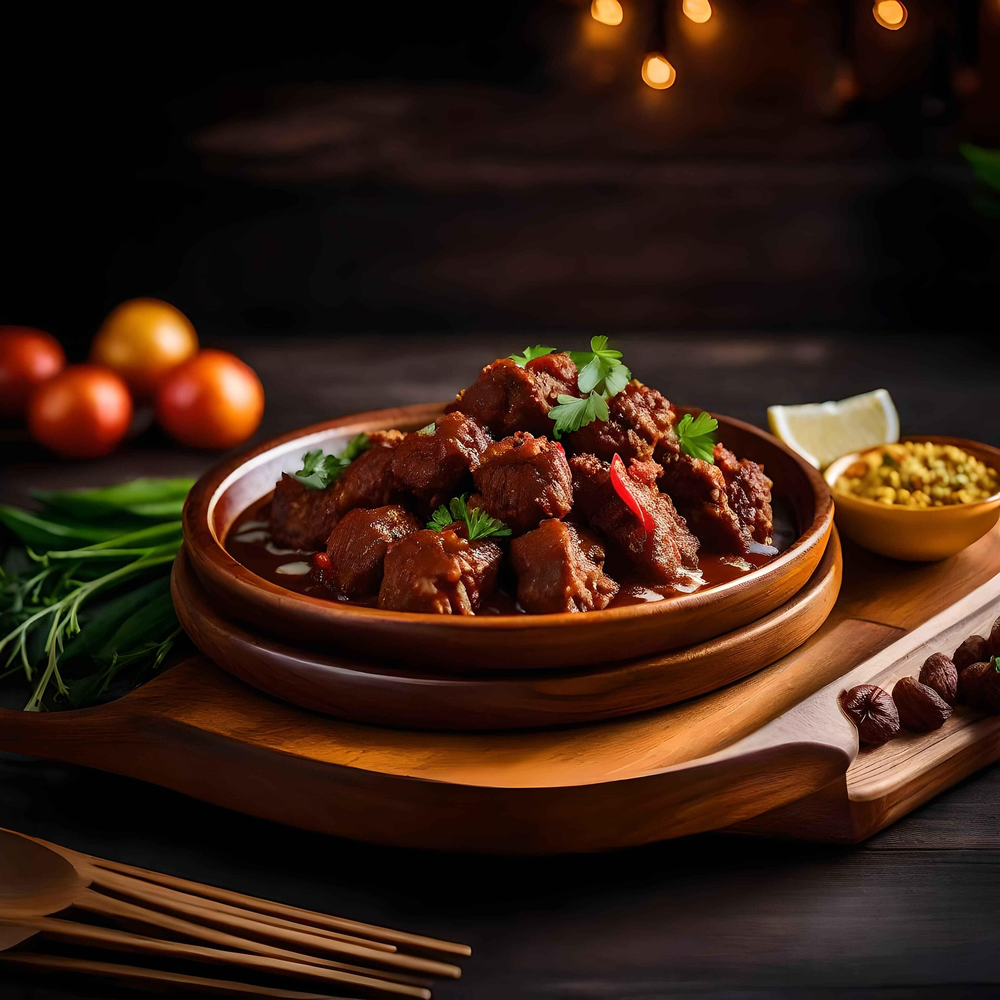

Home
Beef Rendang Recipe

Description
Rendang is a side dish originating from Minangkabau, Indonesia, made from
meat that is cooked at a low temperature for a long time using various
spices and coconut milk.
This dish is one of my favorite because the taste is so delicious and I
only eat this on special day, like eid fitri.
Below is the ingredient and steps to make delicious beef rendang:
Ingredients
- 1 kg beef
-
1 liter thick coconut milk from 3 coconuts (first press without added
water)
- 550 grams grated coconut, toasted until golden brown
- 5 bay leaves
- 1 turmeric leaves
- 10 kaffir lime leaves
- 5 stalks of lemongrass
- 1/2 sticks cinnamon
- 3 cloves
- 2 teaspoons salt
- 1 star anise
Ground spices
- 65 grams garlic
- 125 grams shallots
- 15 grams turmeric
- 35 grams ginger
- 75 grams galangal
- 35 grams candlenuts
- 1/2 teaspoon ground paper
- 1 teaspoon coriander seeds
- 1 cardamom pod
- 1/4 nutmeg